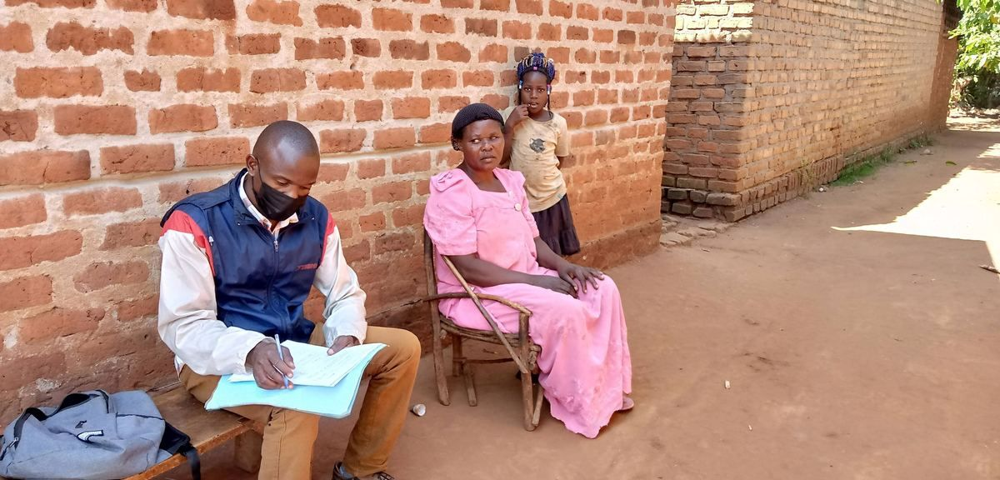

You do not have to go through this alone.
Free, compassionate support through pregnancy, childbirth and recovery. Here is how to reach us and what to expect.
If you or a mother you know has danger signs, act now.
Call our 24/7 helpline on +256 700 123 456, call 999 or 112, and go to the nearest health facility. Do not wait for a scheduled visit.
Danger signs in pregnancy and after birth.
Recognising these early can save a life. Seek care immediately if you notice any of them.
- Heavy vaginal bleeding during pregnancy, after delivery or heavier than usual
- Severe headache with blurred vision or swelling of the face and hands
- Convulsions or fits
- High fever or foul-smelling discharge
- Baby moving much less than usual or not at all
- Severe or constant abdominal pain
- Difficulty breathing or chest pain
- Waters breaking early or labour starting too soon
Choose what is easiest.
Visit us
Sky City Building, P.O Box 960248, Bwaise, Kawempe Division, Kampala.
Monday to Friday, 8:00 am to 5:00 pm.
Getting a navigator is free and simple.
No documents are needed for initial registration, and all SafeMom services are free of charge.
- Call our helpline
- Visit a local health centre in our coverage area
- Ask a community health worker to register you
- Get matched with a youth navigator from your community

Common questions answered.
How do I register for SafeMom services?
Call our helpline on +256 700 123 456, visit a local health centre in our coverage areas, or ask a community health worker. No documents are required for initial registration.
Is there a cost for the services?
No. All SafeMom services are free of charge, including SMS reminders, home visits by navigators, emergency transport coordination and educational materials. We are funded through partnerships, grants and donations.
What areas do you cover?
We started in Jinja District and work in surrounding rural and peri-urban communities and health facility catchment areas. We are expanding step by step, guided by community needs and health system readiness. Contact us to check coverage near you.
How do I become a youth navigator?
We recruit young people aged 18 to 30 from local communities. You need to have completed secondary education, care about maternal health and be committed to serving your community. Training is free. See the Get Involved page.
How can my organisation partner with SafeMom?
We partner with health facilities, NGOs, government agencies and companies on program delivery, funding, research and advocacy. Email partnerships@safemomug.org.
Can I get an emergency ambulance through SafeMom?
If you are a registered mother, your navigator coordinates emergency transport and alerts the facility. In any emergency you can also call 999 or 112 and go to the nearest health facility.
The information on this site is for general support and is not a substitute for professional medical advice, diagnosis or emergency care.